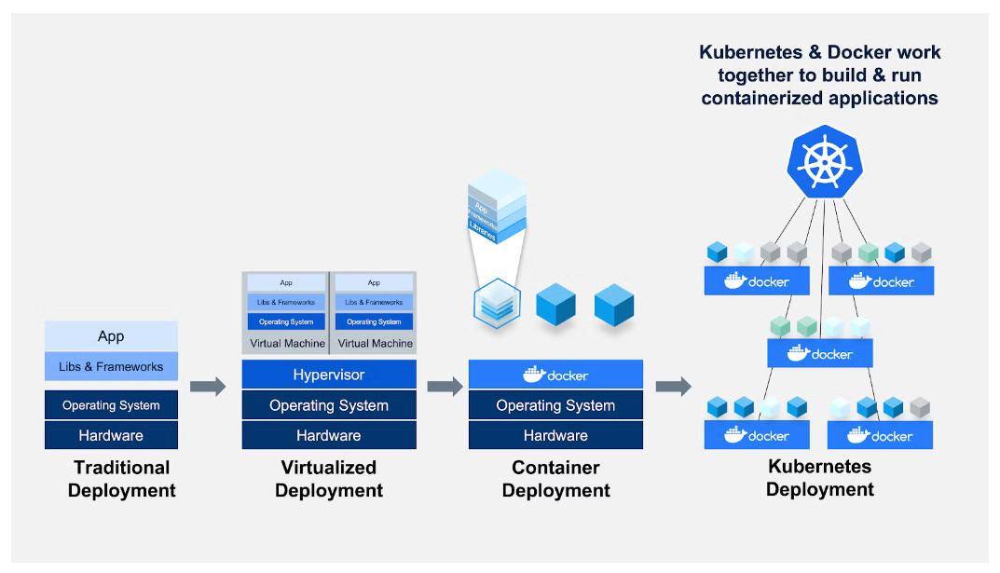

Docker helps developers build, share, run, and verify applications
anywhere — without tedious environment configuration or management.
Docker streamlines the development lifecycle by allowing developers
to work in standardized environments using local containers which
provide your applications and services. Containers are great for
continuous integration and continuous delivery (CI/CD) workflows.
Docker is written in the Go programming language and takes advantage
of several features of the Linux kernel to deliver its
functionality. Docker uses a technology called namespaces to provide
the isolated workspace called the container. When you run a
container, Docker creates a set of namespaces for that container.
It groups containers that make up an application into logical units
for easy management and discovery. Kubernetes builds upon 15 years
of experience of running production workloads at Google, combined
with best-of-breed ideas and practices from the community.
Kubernetes is open source giving you the freedom to take advantage
of on-premises, hybrid, or public cloud infrastructure, letting you
effortlessly move workloads to where it matters to you.
Docker and Kubernetes in Development
